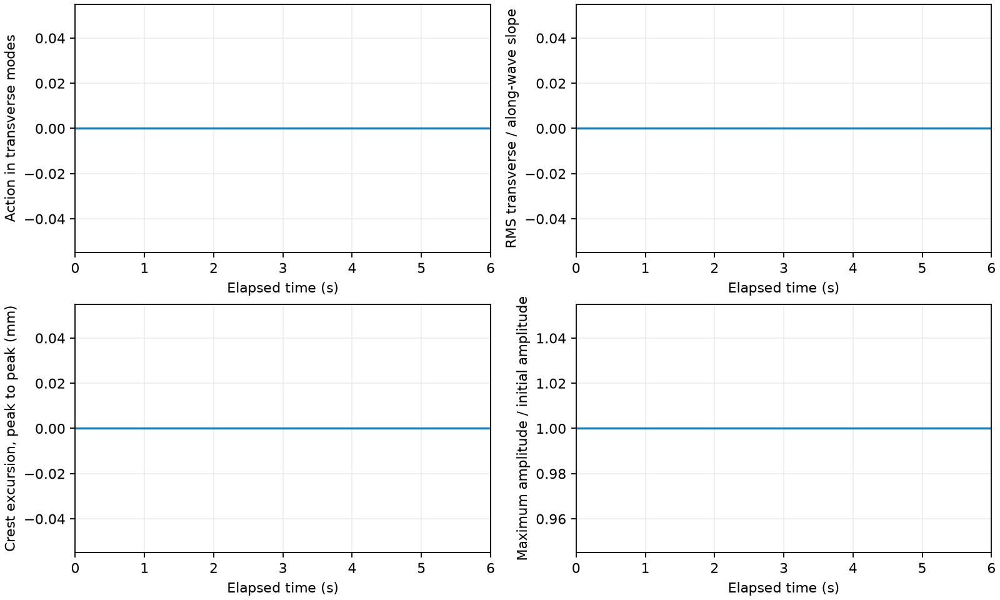
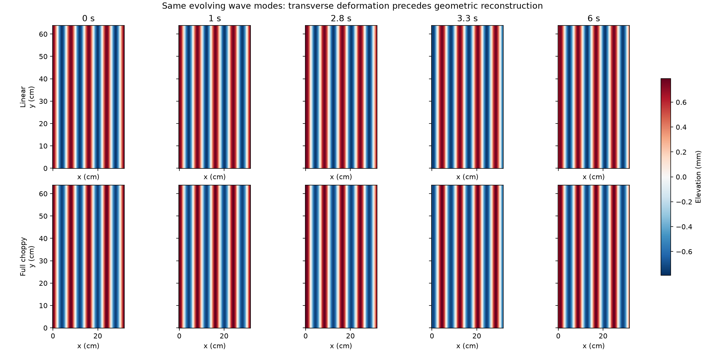

Can a steady current bend initially straight wave crests?
An initially monochromatic 8 cm parent wave encounters an along-wave current that varies across the crests. Each run also evolves passive Cho gravity-capillary roughness on the parent surface, without evolving a three-dimensional current.
The prescribed current is U(y,z) = 4 cm/s + ΔU f(z) cos(2πy/Ly), with Ly = 64 cm. Full-depth cases use f = 1; the surface-confined case has a 2 cm exponential decay scale. Current variation scatters the initial wave into transverse modes. Cho is enabled in all seven cases with the selected 2.4× viscosity and does not feed back on the parent or current.
Controls and measurements
The table reports parent-wave metrics: peak action fraction and slope ratio measure the largest parent response over the run, while boundary action monitors the outer retained transverse modes. The separate MSS histories include the parent, Cho and combined surface. A forced response does not establish spontaneous instability or a fully nonlinear wave-current solution.
| Case | ΔU (cm/s) | Initial ka | Vertical profile | Peak transverse action | Peak RMS slope y/x | Peak boundary action | Output |
|---|---|---|---|---|---|---|---|
| Uniform current | 0 | 0.06 | Full depth | 0.000 | 0.000 | 0 | Summary · Parent history · Cho and total MSS |
| Weak variation | 1 | 0.06 | Full depth | 0.994 | 0.276 | 7.4e-26 | Summary · Parent history · Cho and total MSS |
| Moderate variation | 2 | 0.06 | Full depth | — | — | — | Awaiting parent and Cho completion |
| Strong variation | 3 | 0.06 | Full depth | — | — | — | Awaiting parent and Cho completion |
| Reversed variation | -3 | 0.06 | Full depth | — | — | — | Awaiting parent and Cho completion |
| Surface-confined shear | 3 | 0.06 | 2 cm decay | — | — | — | Awaiting parent and Cho completion |
| Half wave amplitude | 3 | 0.03 | Full depth | — | — | — | Awaiting parent and Cho completion |
Uniform current
Left: the evolving parent surface. Right: the same parent plus Cho gravity-capillary roughness, with damping at 2.4 times molecular viscosity. The laboratory view and vertical proportions are fixed.
This movie shows physical time 2.75–3.25 s at 0.1× speed and 60 frames per second. The short, slow window makes the capillary ripple motion easier to see. The saved Cho fields and MSS history cover the full 0–6 s integration.
Playback and physical-time metadata · Parent, Cho and total mean-square slope
The Cho calculation uses exact streamwise periodicity; its periodic solution is repeated 4 times across the displayed surface.
Parent refraction control
Left: uniform-current translation. Right: prescribed-current parent response. Both start from the same monochromatic wave. This companion comparison shows the full 0–6 s parent evolution and omits Cho to isolate crest bending.
Playback and physical-time metadata · Reconstructed-surface diagnostics


How to read this experiment
The parent-wave amplitudes evolve under the same selected polarized wave-current coupling used by the parent model. A steady Hermitian operator conserves the parent wave action and Hamiltonian. The parent surface is reconstructed from all retained modes using the bounded second-order gravity-capillary map. Cho adds forced, dissipative roughness on this evolving surface. The parent conservation statement does not apply to the dissipative Cho field. The current is prescribed and receives no feedback.
The uniform-current control tests pure translation. Changing current strength, reversing its variation, confining it near the surface, and halving the wave amplitude help distinguish refraction from numerical or reconstruction artifacts. Empty crest-excursion CSV entries indicate an envelope too small for a reliable phase crest; empty map-order entries indicate times where that diagnostic was not sampled.